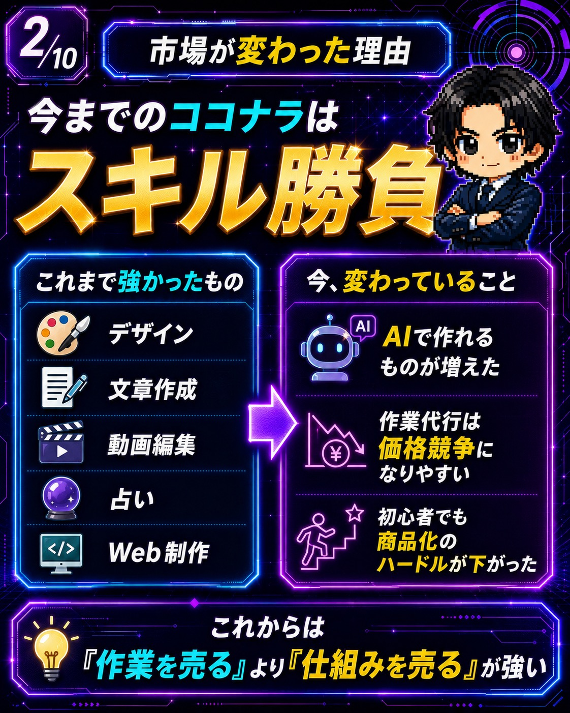
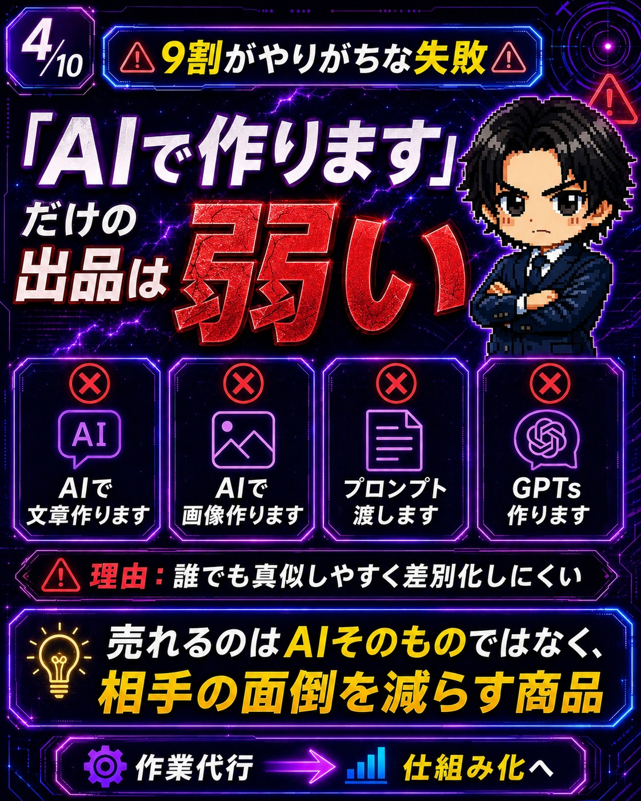
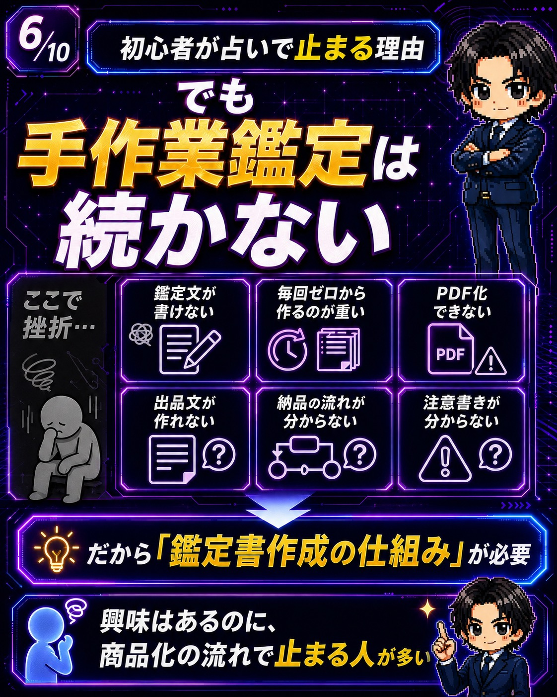
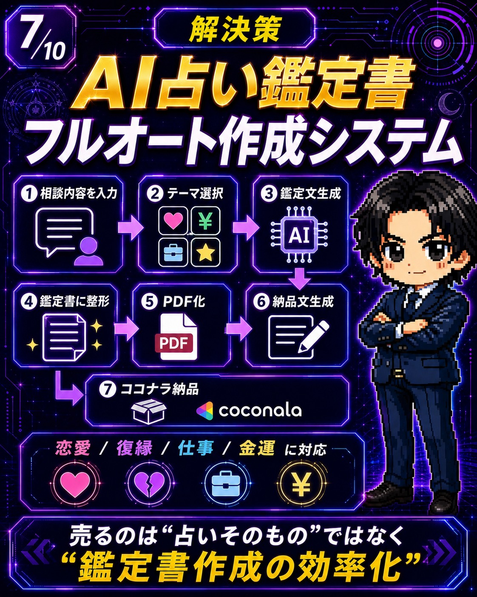
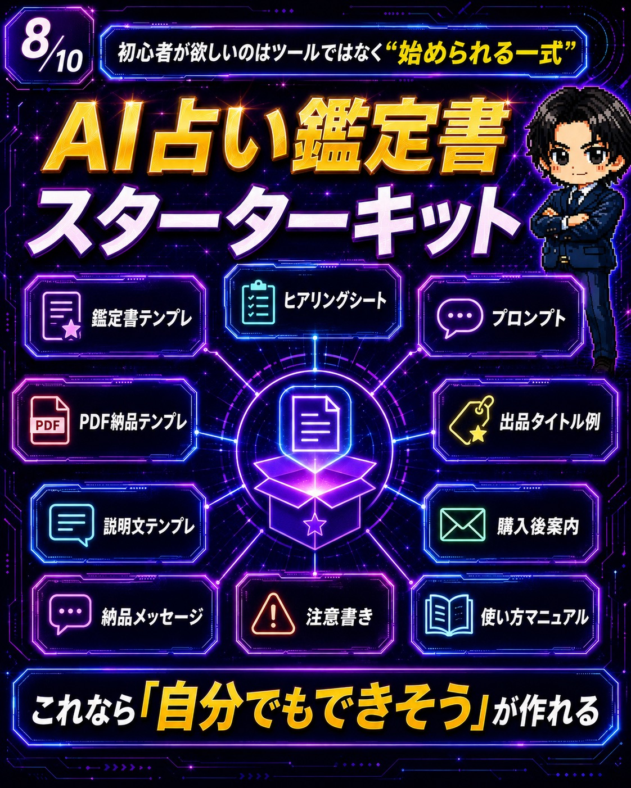
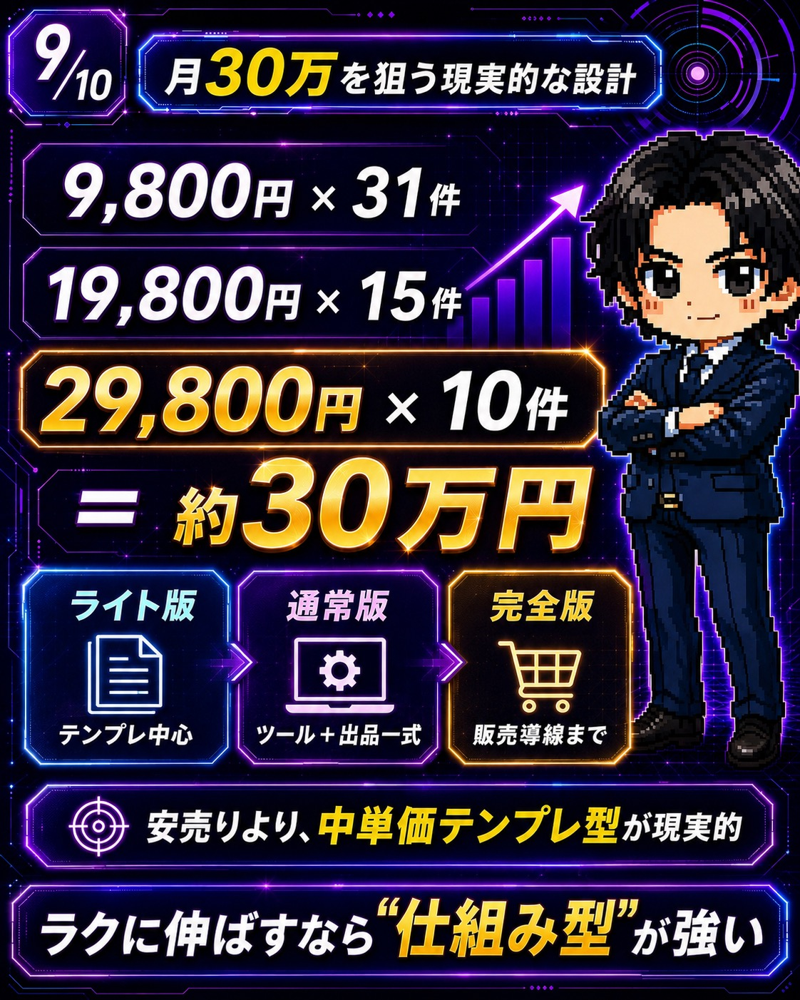
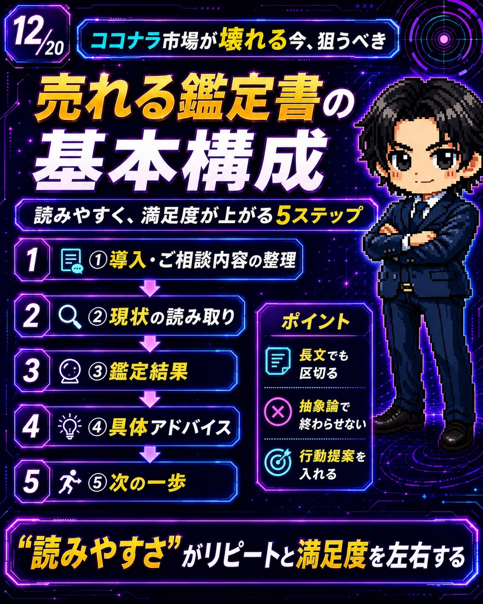
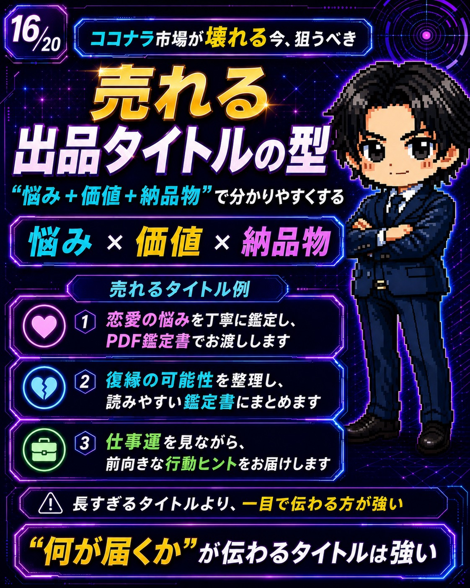
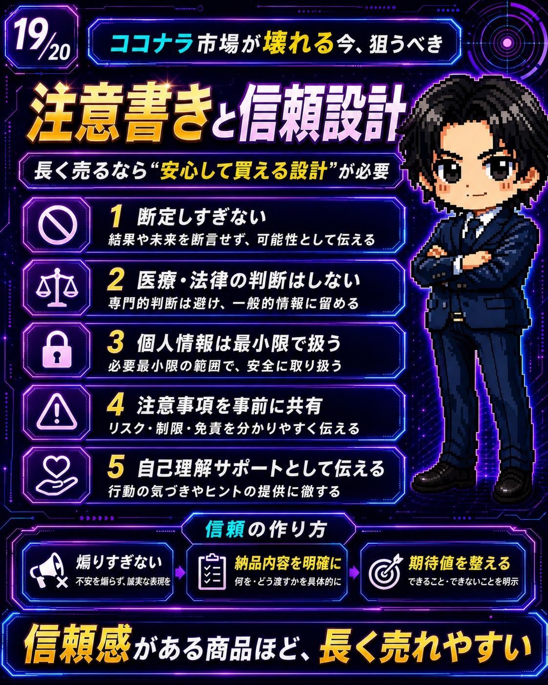

今、ココナラの市場がかなり大きく変わっています。
少し前までのココナラは、分かりやすく言えばスキル勝負の世界でした。
デザインができる人。
文章が書ける人。
動画編集ができる人。
Web制作ができる人。
占いができる人。
こういった、すでに何かができる人がサービスを出して売る場所という印象が強かったと思います。
もちろん、今でもスキルは大事です。
ただ、AIの進化によって、初心者が商品を作るハードルはかなり下がりました。
文章はAIで作れる。
画像もAIで作れる。
出品文もAIで作れる。
テンプレもAIで作れる。
CodexのようなAIエージェントを使えば、簡単なツールや仕組みまで形にしやすくなっています。
つまり今は、ただスキルを持っている人だけが有利な時代ではなくなってきています。
では、これから何が強いのか。
結論から言うと、これから強いのは、作業を売る人ではなく、仕組みを売る人です。
ただ文章を作ります。
ただ画像を作ります。
ただプロンプトを渡します。
これだけだと、もう差別化しにくくなっています。
これから求められるのは、面倒な作業をラクにしてくれるもの。
初心者でも迷わず使えるもの。
すぐ商品化できる形になっているものです。
そして今回、特に注目したいのが、AI × 占い × ココナラというジャンルです。
ただし、ここで言うのは単なるAI占いではありません。
今回の本命は、AIを使って、占い鑑定書の作成を効率化する仕組みです。
もっと分かりやすく言うと、相談内容を入力する。テーマを選ぶ。鑑定文を作る。鑑定書として整える。PDF化する。納品文まで準備する。
この一連の流れを、AIとテンプレでかなり効率化する考え方です。
占いに興味がある人。
ココナラで副業を始めたい人。
AIを使って何か商品を作りたい人。
でも何から始めたらいいか分からない人。
そんな人にとって、かなり現実的で、始めやすいテーマだと思っています。
Chapter 01
今までのココナラは「スキル勝負」だった

これまでのココナラでは、分かりやすいスキルを持っている人が強い傾向にありました。
たとえば、ロゴを作れる。文章を書ける。動画編集ができる。占いができる。ホームページを作れる。
こういったスキルです。
購入者から見ても、この人に頼めば何かを作ってもらえるというのが分かりやすかった。
でも今は、AIの進化によって、ある程度の作業は誰でも形にできるようになりました。
ここで起きているのが、作業代行の価格競争です。
ただ文章を作るだけなら、AIでできる。
ただ画像を作るだけなら、AIでできる。
ただアイデアを出すだけなら、AIでできる。
そうなると、単純な作業代行はどんどん安く見られやすくなります。
だからこそ、これからは作業そのものではなく、作業をラクにする仕組みが強くなっていきます。
たとえば、ココナラ出品まで迷わないテンプレ。SNS投稿を継続しやすくする仕組み。note販売導線を作るテンプレ。占い鑑定書を作るためのAI補助ツール。購入後から納品までの流れを整えたセット。
こういったものです。
つまり、買う側から見て、これがあれば自分でもできそうと思えるものが強い。
ここが、今のココナラ市場でかなり重要になっています。
Chapter 02
Codexで「実務を形にする」ハードルが下がった
ChatGPTやClaude、GeminiのようなAIは、文章を作るのが得意です。
構成を考える。タイトルを出す。説明文を作る。投稿文を作る。アイデアを出す。
これだけでも十分便利です。
でも、CodexのようなAIエージェントが出てきたことで、もう一段階進みました。
何が変わったかというと、文章やアイデアだけではなく、実際に使える形まで作りやすくなったことです。
たとえば、簡単な入力フォーム。テンプレを切り替えるツール。PDF化しやすいレイアウト。納品文を生成する仕組み。出品文を作る補助ツール。マニュアルや素材をまとめる仕組み。
こういったものが、以前よりかなり作りやすくなりました。
もちろん、いきなり本格的な大規模システムを作る必要はありません。
初心者向けの商品なら、まずは、使いやすい。迷わない。テンプレがある。納品物が見える。出品までの流れが分かる。
このくらいで十分価値があります。
ここで大事なのは、AIで何でもできますと言うことではありません。
購入者が面倒に感じる部分を先に仕組み化してあげることです。
Chapter 03
「AIで作ります」だけでは弱い理由

ここで、多くの人がやりがちな失敗があります。
それが、AIそのものを売ろうとすることです。
たとえば、AIで文章作ります。AIで画像作ります。プロンプト渡します。GPTs作ります。AIで占います。
こういった出品です。
もちろん、需要がゼロというわけではありません。
ただ、これだけだとかなり弱いです。
理由はシンプルです。
誰でも真似しやすいからです。
購入者から見ると、それって他の人と何が違うの？となりやすい。
これから売れるのは、AIそのものではありません。
売れるのは、AIを使って、相手の面倒を減らす商品です。
たとえば、出品まで迷わない。鑑定書が作りやすい。PDFで納品しやすい。購入後の流れが分かる。注意書きまで用意されている。テンプレがあるからすぐ使える。
こういう状態を作ってあげる商品です。
つまり、AIを売るのではなく、AIで整えた「始めやすい仕組み」を売る。
ここが、今後かなり大事になってきます。
Chapter 04
なぜ「AI×占い×ココナラ」が面白いのか
ここから本題です。
なぜ、今「AI×占い×ココナラ」に注目するのか。
理由はかなり分かりやすいです。
占いジャンルは、初心者でも入りやすい要素が多いからです。
まず、悩みが明確です。
恋愛。復縁。相手の気持ち。仕事。金運。人間関係。
こういったテーマは、購入者の悩みがはっきりしています。
副業で商品を作る時に一番難しいのは、誰に何を売るのかを決めることです。
でも占いジャンルは、最初から悩みが見えやすい。
恋愛で悩んでいる人。復縁したい人。仕事の方向性に迷っている人。金運や将来が不安な人。
このように、対象が分かりやすい。
さらに、占いは文章納品と相性が良いです。
チャット鑑定。メッセージ鑑定。PDF鑑定書。レポート形式。
こういった形で提供しやすい。
特に強いのが、鑑定書です。
鑑定書は、購入者から見ても何が届くのかが分かりやすい。
副業初心者にとっても、何を納品すればいいのかが分かりやすい。
つまり、売る側にも買う側にも分かりやすい商品になりやすいんです。
Chapter 05
でも、手作業の占い鑑定は続きにくい

ただし、ここで大きな壁があります。
占いジャンルは入りやすい。でも、手作業で鑑定を続けるのはかなり大変です。
初心者が止まりやすいのは、たとえばここです。
鑑定文が書けない。毎回ゼロから作るのが重い。PDF化できない。出品文が作れない。納品の流れが分からない。注意書きが分からない。
占いに興味はある。でも、商品化の流れで止まってしまう。
これ、かなり多いと思います。
特に初心者は、何を書けばいいのか。どのくらいのボリュームにすればいいのか。どう納品すれば満足されるのか。ここが分からない。
だからこそ、ここにAIを使う価値があります。
AIを使えば、鑑定文の下書きを作れる。
テンプレを使えば、鑑定書の構成を整えられる。
Codexを使えば、入力フォームやPDF化の仕組みも作りやすい。
つまり、占いそのものを売るというより、鑑定書作成の流れを効率化する仕組みが強くなるわけです。
Chapter 06
解決策は「AI占い鑑定書フルオート作成システム」

ここで今回の本命です。
それが、AI占い鑑定書フルオート作成システムという考え方です。
名前だけ聞くと少し難しそうに感じるかもしれません。
でも中身はシンプルです。
相談内容を入力する。テーマを選ぶ。鑑定文を生成する。鑑定書の形に整える。PDF化する。納品文を作る。ココナラで納品する。
この流れを、AIとテンプレとツールで効率化するだけです。
ポイントは、未来や結果を断定するものではないということです。
そうではなく、占い鑑定書を作る作業をラクにする仕組みです。
恋愛。復縁。仕事。金運。
こういったテーマごとにテンプレを用意しておけば、かなり横展開しやすくなります。
しかも、鑑定書という納品物があるので、購入者にも価値が伝わりやすい。
ただのチャット返信より、PDF鑑定書として整っている方が、商品感も出ます。
だから、初心者でも「これなら出品できそう」と思いやすい。
ここがかなり強いポイントです。
Chapter 07
初心者が欲しいのは「ツール」ではなく“始められる一式”

ここはかなり大事です。
初心者が本当に欲しいのは、単なるツールだけではありません。
ツールだけ渡されても、で、どうやって売ればいいの？となるからです。
本当に欲しいのは、始められる一式です。
たとえば、鑑定書テンプレ。ヒアリングシート。鑑定文プロンプト。PDF納品テンプレ。出品タイトル例。説明文テンプレ。購入後案内。納品メッセージ。注意書き。使い方マニュアル。
ここまで揃っていると、かなり始めやすくなります。
読者が欲しくなるのは、すごそうなツールではありません。
これなら自分でもできそう。
そう思える状態です。
だからこそ、商品にするなら、AI占い鑑定書スターターキットのように見せるのが強いです。
ツール単体ではなく、鑑定書販売を始めるための一式。
これが、初心者にとって一番分かりやすく、欲しくなりやすい形です。
Chapter 08
月30万を狙うなら、中単価テンプレ型が現実的

ここで、月30万を狙う現実的な考え方を整理します。
大事なのは、安売りで大量に売ることではありません。
初心者が疲弊しやすいのは、低単価で大量対応してしまうことです。
たとえば、1件3,000円や5,000円で大量に対応すると、売上は立ってもかなり大変です。
だから狙うなら、中単価のテンプレ型が現実的です。
たとえば、9,800円 × 31件。19,800円 × 15件。29,800円 × 10件。
このような設計です。
特に、29,800円 × 10件 = 約30万円という考え方はかなり分かりやすい。
もちろん最初から高単価で売る必要はありません。
最初はライト版でもOKです。
ライト版：テンプレ中心。
通常版：ツール＋出品一式。
完全版：販売導線まで。
このように段階を分けると、購入者も選びやすくなります。
大事なのは、安く売ることではなく、価値が伝わる形にすることです。
鑑定書テンプレだけなのか。ツールまで付くのか。出品文まで付くのか。販売導線まで付くのか。
ここを分かりやすく分けることで、単価も上げやすくなります。
Chapter 09
無料配信から販売までの流れ
このテーマが強い理由は、販売までの流れも作りやすいことです。
いきなりツールを販売しますと言っても、なかなか売れません。
まず必要なのは、教育です。
なぜ今ココナラ市場が変わっているのか。なぜAIで仕組み化する商品が強いのか。なぜ占いジャンルが初心者向きなのか。なぜ鑑定書販売とAIが相性いいのか。
ここを先に伝える。
すると読者は、なるほど、たしかにこのジャンルは面白そうと思います。
次に、手作業の大変さに気づいてもらう。
鑑定文を書くのが大変。PDFにするのが大変。出品文を作るのが大変。納品文を整えるのが大変。注意書きを考えるのが大変。
ここで初めて、それなら仕組みが欲しいとなります。
つまり、流れはこうです。
無料配信で気づきを与える。
教育で理解を深める。
手作業の大変さを見せる。
仕組み化の価値を伝える。
最後にツールやスターターキットが欲しくなる。
この流れが自然です。
だから今回のテーマは、ただのAI占いではありません。
AI占い鑑定書販売を始めやすくする仕組みとして見せるのがポイントです。
Chapter 10
まず狙うべきは「悩みが深いテーマ」
AI占い鑑定書をココナラで出すなら、最初に大事なのはテーマ選びです。
初心者がいきなり珍しいテーマを狙う必要はありません。
最初は、需要が見えやすいテーマから入るのが正解です。
具体的には、恋愛、復縁、相手の気持ち、仕事、金運、人間関係。このあたりです。
なぜこのテーマが強いかというと、悩みが深く、相談しやすいからです。
たとえば恋愛なら、相手はどう思っているのか。連絡していいのか。この関係を続けていいのか。という悩みがあります。
復縁なら、まだ可能性はあるのか。相手の気持ちは残っているのか。今動くべきなのか。といった悩みがあります。
仕事や金運も同じです。
今の仕事を続けるべきか。副業を始めてもいいのか。今後のお金の流れが不安。
こういうテーマは、文章納品と相性が良く、鑑定書にもまとめやすいです。
最初に狙うべきなのは、奇抜なテーマではありません。
読者の悩みがすぐ見えるテーマです。
Chapter 11
売れる鑑定書には「基本構成」がある

鑑定書は、ただ長く書けばいいわけではありません。
むしろ長すぎて読みにくいと、満足度が下がることもあります。
大事なのは、読みやすい構成です。
おすすめの流れはこの5つです。
1導入・相談内容の整理
2現状の読み取り
3鑑定結果
4具体アドバイス
5次の一歩
最初に、相談内容を整理する。
次に、今の状況を読み取る。
その上で鑑定結果を伝える。
そして、最後に具体的なアドバイスや次の一歩を示す。
この流れにすると、購入者はかなり読みやすくなります。
特に大事なのは、抽象的な言葉だけで終わらせないことです。
良い流れが来ています。運気が高まっています。
だけだと、読み物としては弱い。
それよりも、今は焦って連絡するより、まず自分の気持ちを整理する時期です。次に動くなら、短いメッセージで様子を見るのが良さそうです。
のように、次の行動が見える方が満足度が上がりやすいです。
占い鑑定書は、雰囲気だけではなく、読んだ後に少し前向きになれることが大事です。
Chapter 12
ヒアリングが整うほど、鑑定書は作りやすくなる
鑑定書の質を上げるには、最初のヒアリングがかなり重要です。
ここが雑だと、鑑定文もぼんやりします。
最低限、聞いておきたいのはこのあたりです。
ニックネーム
悩みカテゴリ
現状や経緯
相手との関係
聞きたいこと
希望納期
特に大事なのは、悩みカテゴリです。
恋愛なのか。復縁なのか。仕事なのか。金運なのか。人間関係なのか。
ここが分かるだけで、鑑定書の方向性がかなり定まります。
さらに、聞き方にもコツがあります。
全部自由記入にすると、購入者が面倒に感じることがあります。
だから、選択式を混ぜると良いです。
たとえば、今回のご相談テーマを選んでください。
恋愛
復縁
仕事
金運
人間関係
その他
このようにしておくと、購入者も答えやすいです。
また、長文を書かせすぎないことも大事です。
最初から大量に書いてもらおうとすると、購入前のハードルが上がります。
だから、必要最低限の情報を集めて、そこから鑑定書に整える。
この流れが理想です。
Chapter 13
Codexで自動化するべき部分
ここでCodexの出番です。
占い鑑定書販売で面倒なのは、毎回同じような作業が発生することです。
たとえば、相談内容を受け取る。鑑定文の下書きを作る。鑑定書として整える。PDF出力する。出品文を作る。納品メッセージを作る。
このあたりです。
これを毎回ゼロからやると、かなり大変です。
だからこそ、先に仕組み化します。
Codexを使って、入力フォーム、鑑定文プロンプト、鑑定書整形、PDF出力、出品文作成、納品メッセージ生成。このあたりをまとめた簡易ツールを作る。
そうすれば、毎回ゼロから作る回数を減らせます。
自動化の本質は、何でも完全放置にすることではありません。
毎回やる作業を減らすことです。
ここを間違えない方がいいです。
完全自動で全部やろうとすると、逆に難しくなります。
まずは、面倒な部分を1つずつ減らす。
それだけでも十分価値があります。
Chapter 14
オプション設計で売上は伸ばしやすい
占い鑑定書販売は、オプションとも相性が良いです。
たとえば、追加質問1件、ボリュームUP鑑定、24時間以内納品、相性診断セット。
こういったオプションが作れます。
オプションがあると、購入者が自分に合った形を選びやすくなります。
まず試したい人はライト版。
しっかり見てほしい人は標準版。
詳しく見てほしい人は充実版。
このように分けると、売る側も対応しやすくなります。
ここで大事なのは、ただ高くすることではありません。
追加価値を明確にすることです。
ボリュームUP鑑定なら、鑑定内容が増える。
24時間以内納品なら、早く受け取れる。
相性診断セットなら、追加で相手との関係性を見られる。
このように、何が追加されるのかが分かると、購入者も選びやすいです。
本体商品だけでなく、オプションを整えることで、売上は伸ばしやすくなります。
Chapter 15
出品タイトルは「何が届くか」が伝わることが大事

ココナラで出品する時、タイトルはかなり重要です。
タイトルが分かりにくいと、そもそもクリックされません。
売れるタイトルの基本は、悩み × 価値 × 納品物です。
たとえば、恋愛の悩みを丁寧に鑑定し、PDF鑑定書でお渡しします。
このタイトルなら、恋愛の悩みを扱うこと。丁寧に鑑定すること。PDF鑑定書で届くこと。が分かります。
他にも、復縁の可能性を整理し、読みやすい鑑定書にまとめます。
これなら、復縁で悩んでいる人に刺さります。
仕事運を見ながら、前向きな行動ヒントをお届けします。
これなら、仕事に迷っている人に向いています。
大事なのは、長くしすぎないことです。
そして、何が届くのかが一目で分かることです。
購入者は、商品ページをじっくり読んでくれるとは限りません。
だからタイトルの時点で、これは自分向けかもと思ってもらう必要があります。
Chapter 16
説明文は売り込みより“不安解消”
サービス説明文で大事なのは、強く売り込むことではありません。
むしろ大事なのは、購入前の不安を消すことです。
説明文には、最低限この5つを入れると分かりやすくなります。
1こんな方へ
2提供内容
3購入後の流れ
4納期・納品形式
5注意事項
こんな方へでは、どんな人におすすめかを明確にする。
提供内容では、何を渡すのかを具体的に書く。
購入後の流れでは、注文から納品までのステップを見せる。
納期・納品形式では、どのくらいで、どんな形で届くのかを書く。
注意事項では、購入前に知っておいてほしいことを伝える。
これがあるだけで、購入者の安心感が変わります。
説明文は、煽る場所ではありません。
安心して買ってもらうための場所です。
だから、初心者向け商品ほど、分かりやすさが大事です。
Chapter 17
リピートされる納品の型
占い鑑定書販売で大事なのは、納品体験です。
一度買ってくれた人が、またお願いしたいと思うかどうかは、納品の丁寧さでかなり変わります。
おすすめの納品の流れはこの5つです。
1お礼・ご挨拶
2鑑定の要約
3結果の詳細
4具体アドバイス
5必要なら次回提案
最初に、購入へのお礼を伝える。
次に、今回の鑑定内容を短く要約する。
そのあと、詳しい鑑定結果を伝える。
最後に、具体的なアドバイスや次にできる行動を添える。
必要であれば、次回提案をする。
ここで大事なのは、押し売りにならないことです。
もし必要であれば、次回は〇〇についても詳しく見ることができます。
くらいの自然な提案で十分です。
納品物は、読みやすく、丁寧で、次の行動が見えることが大事です。
納品満足度が高いほど、リピートにも繋がりやすくなります。
Chapter 18
注意書きと信頼設計

占いジャンルで長く売るなら、信頼設計はかなり大事です。
特に気をつけたいのは、断定しすぎないことです。
たとえば、復縁や成功を断定する言い方、結果を約束するような表現は避けた方がいいです。
こういう言い方は避けた方がいいです。
占い鑑定は、未来を保証するものではありません。
あくまで、気づきや整理、前向きな行動のヒントとして届ける。
この姿勢が大事です。
また、医療や法律などの専門判断はしない。個人情報は必要最低限だけ扱う。注意事項は事前に共有する。できること、できないことを明確にする。
こういった部分を整えることで、購入者も安心して依頼できます。
信頼感がある商品ほど、長く売れやすいです。
短期的に強く煽るより、長く安心して買える設計にする。
これが、占い鑑定書販売ではかなり重要です。
Chapter 19
まとめ：AI占い鑑定書販売は“仕組み化”がカギ
ここまでをまとめます。
今のココナラ市場では、ただ作業を売るだけでは差別化しにくくなっています。
AIで文章を作る。AIで画像を作る。AIで占う。
これだけでは弱い。
これから強いのは、AIを使って、面倒な作業を仕組み化する商品です。
その中でも、AI×占い×ココナラはかなり面白いテーマです。
理由は、悩みが明確。初心者でもテーマを理解しやすい。鑑定書という納品物がある。PDF化しやすい。テンプレ化しやすい。AIで効率化しやすい。出品文や販売導線まで作りやすい。
こういった強みがあるからです。
ただし、売るべきなのは、ただのAI占いではありません。
売るべきなのは、鑑定書販売を始めやすくする仕組みです。
テーマ選定。ヒアリング。鑑定書作成。PDF化。出品文。納品文。注意書き。販売導線。
ここまで整えることで、初心者でもかなり始めやすくなります。
今回の内容は、まず無料で知ってほしい土台の部分です。
単なるAI占いではなく、鑑定書販売の仕組みを作る。
これが、今回のテーマの本質です。